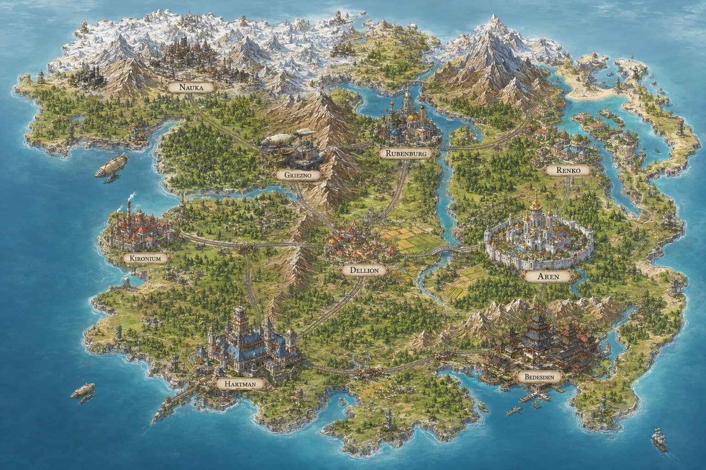

OVERVIEW
세계관 설명
700여 년 전, 대륙은 드래곤과 엘프, 드워프, 뱀파이어 등 다양한 인외 종족들이 지배하던 시대였다. 인간은 그들의 노예이자 때로는 식량으로 취급받으며 살아갔고, 인외 종족들은 영토와 인간 노예를 두고 자기들끼리 끝없는 전쟁을 벌이고 있었다.
그러던 어느 날, 작은 마을과 촌락들이 흩어져 있던 땅 위에 거대한 균열이 생겨났다. 균열에서 끊임없이 뿜어져 나오는 마력은 동물과 식물을 가리지 않고 오염시켜 마물로 만들었고, 세상은 인간과 인외를 가리지 않고 마물들의 유린 속으로 빠져들었다.
그 혼란 속에서 처음으로 몸속에 마력을 저장하고 다스려 마물을 몰아낸 인간이 나타났다. 사람들은 그를 용사라 부르며 따랐다. 균열이 불러온 혼란은 수백 년간 이어진 인외의 지배 구조를 무너뜨렸고, 용사를 중심으로 인간은 처음으로 스스로 일어설 힘을 갖게 되었다.
용사는 대륙을 떠돌며 마물을 처리했고, 그 곁에는 마법을 다룰 줄 알게 된 이들이 모여들어 사람들을 규합하는 교단을 이루었다.
마침내 용사는 균열을 무너뜨려 봉인했지만, 그 폭발에 휩쓸려 함께 사라졌다. 교단은 용사가 남긴 자리 위에 나라를 세웠다 — 인외의 지배에서 벗어난 인간 최초의 나라, 아르델의 시작이었다.
교단은 용사가 언젠가 돌아올 것이라 믿으며 스스로를 리벨리온이라 칭했다. 그날까지 제국을 평화롭게 지키기 위해 그들은 황제의 임명권만을 쥔 채 정치 전면에서 물러나, 본래의 사명인 사람들을 위한 헌신에 집중하기로 했다.
700년이 지난 지금, 아르델은 마법으로 강성해졌지만 동시에 그 마법에 잠식되어 가고 있었다. 점점 복잡해지는 마법은 극소수의 대마법사만이 다룰 수 있게 되었고, 부와 권력은 그들 — 황가와 귀족 — 에게만 집중되었다. 마법을 쓰지 못하는 이들은 농노 이상의 취급을 받지 못했다.
그 와중에 제국은 크로노스 황국을 상대로 전쟁을 일으켰으나 패배했고, 그 여파는 제국 전역으로 퍼져 사람들의 삶을 더욱 무겁게 짓눌렀다. 전쟁의 패배로 대마법사들의 권위는 크게 흔들렸고, 그 틈을 메트로가 세운 마도공학 산업이 메우며 급격히 성장해 나갔다.
태어날 때부터 운명이 정해지는 이 체제에 대한 불만은 서부에서 시작된 마도공학 혁명을 거대한 흐름으로 키워냈다. 교단과 황가는 이를 막을 수 없었고, 결국 비밀리에 준비해 온 용사의 부활을 앞당기기로 한다.
새벽, 황궁 광장에서 부활 의식이 치러졌다. 그러나 그것은 교단이 의식에 필요한 막대한 마력을 충당하기 위해, 궁정 마법사들과 그들에 준하는 마력을 지닌 황가 사람들을 속여 제물로 삼은 의식이었다. 부활한 용사는 교단의 의도와 다르게 행동했고, 하룻밤 사이 제국의 대마법사와 황가의 핏줄 대부분이 소멸하는 대사건으로 끝났다.
혼란에 빠진 아르델을 교단이 다시 장악하려는 순간, 기존 귀족들이 스스로 귀족 지위를 포기하고 의회 설립을 선언하며 한 남자 — 메트로 — 를 초대 대통령으로 추대했다. 교단과 시민들 모두 처음엔 이 혁명정부를 인정하지 않았지만, 귀족들의 지위 포기와 의회 설립이 시민들의 지지를 얻으며 아르델 공화국이 선포되었다. 지금으로부터 3년 전의 일이며, 현재는 742년이다. 아르델과 교단은 여전히 팽팽한 소강상태에 있다.
아르델이 위치한 이 대륙에는 아르델 외에 다른 나라가 존재하지 않으며, 지금도 소수의 인외 종족이 남아 있을 뿐 이미 인간이 권력의 중심을 차지한 지 오래다. 드래곤과 인간이 손을 잡고 자신들의 대륙을 정복한 크로노스 황국은 바다 건너 다른 대륙에 위치해, 인외가 다수를 차지하는 정반대의 사회를 이루고 있다. 한때 제국이 크로노스 황국과 전쟁을 벌여 패배했지만, 지금은 약간의 교류가 가능한 수준으로 관계가 회복되었다 — 크로노스 황국은 추후 별도의 세계관으로 설정될 예정이다.
CHRONICLE
타임라인
아래로 스크롤하면 순서대로 나타납니다.
STATE OF THE REPUBLIC
아르델 공화국
인외의 지배 아래 살아가던 인간이 700여 년 전 용사의 부름에 응해 세운, 인간 최초의 나라 — Republic of Ardel. 천 년 제국을 꿈꾼 지 742년, 부패한 아르델 제국은 단 하룻밤의 사건으로 혁명을 거쳐 공화국이 되었다. 공화국이 선포된 지는 이제 3년째다. 초대 대통령 메트로(메트로 산업의 실소유주)가 혁명정부의 추대로 자리에 올랐으며, 혁명을 주도한 것은 그의 어릴적 친구이자 메트로 산업의 투자자였던 귀족, 앨리시아 폰 하르트만이었다. 교단(리벨리온)과는 여전히 팽팽한 소강상태가 이어지고 있다.
정치 상황
공화국 정부는 의회와 법원이 분리되어 있으나, 법원은 의회가 지정한 판사들로 구성된 사실상의 하위 기관이라 실질적으로는 의회가 공화국을 지배하고 있다고 볼 수 있다. 의회는 상원(귀족의회)과 하원(시민의회)의 양원으로 나뉜다.
상원 · 귀족의회 (70석)
황가 시절 토지를 소유했던 귀족 가문들이 귀족의 권리를 포기하는 대신 가문당 1~2명씩 선출해 만든 의회로, 각 지역의 이권을 대변한다. 1년 단위로 지역 사업·예산 계획을 수립해 중앙정부로부터 예산과 자원을 배정받으며, 결정 사항은 하원의 재검토를 거쳐 행정부가 집행한다. 상원 2/3 이상이 반대하면 하원의 의결을 중단시키거나 대통령의 결정을 거부할 수 있는 거부권을 가진다.
공화국 개혁 과정에서 귀족들은 자신들 토지의 30%만 남기고, 나머지는 의회가 인수한 황가의 자산과 메트로 산업의 자금을 동원해 최저가로 매입했다. 매입한 토지는 시민들에게 10년간 임대한 뒤 자가로 전환해주는 정책과 저리 대출을 통해 대부분 재분배되었다.
하원 · 시민의회 (200석)
기존 정치 세력이 아닌 공화국 평민들이 주를 이루는 의회로, 군사·세금·정책 예산 승인 등 대통령의 주요 국가정책에 대한 허가 권한을 가진다. 새로운 지식인들로 이루어졌다고는 하나 실제로는 귀족들의 교육 아래 정당에 소속된 이들이 대부분이라, 다음 선거가 가장 치열할 것으로 예상된다.
경제 상황
화폐 단위는 1C(크레딧) = 1USD. 아르델의 연간 총생산은 6조 4,000억 C이며, 이 중 35%인 2조 2,000억 C가 메트로 산업 한 곳에서 나오는, 단일 기업에 급격히 의존된 경제 구조다. 수도 아렌 기준 4인 가족이 풍족하게 한 달을 보내려면 12,400C가 필요하지만, 전국 평균 한 달 봉급은 1,200C에 불과하다. 지방의 한 달 생활비(2,400C)조차 평균 봉급의 두 배에 달해, 도시와 지방 사이의 소득 격차가 극심하다.
경제 성장 지수 (연도별)
주요 산업 생산량 (연도별)
CARTOGRAPHY
세계 지도

FACTIONS & PEOPLE